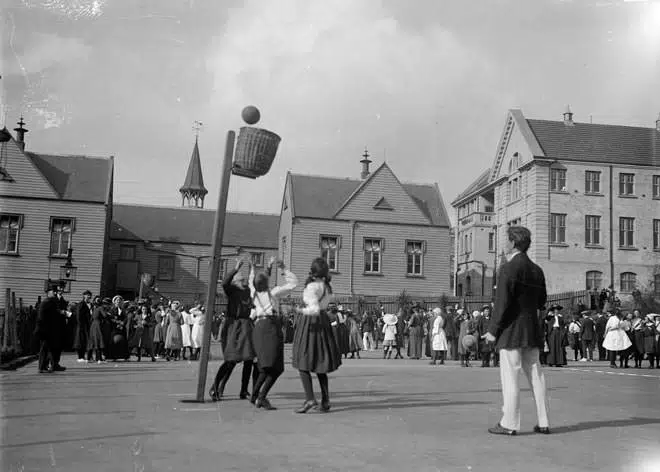

Basquetebol
O basquetebol, ou simplesmente basquete, é um esporte coletivo praticado entre duas equipes. Ele é jogado com uma bola, onde o objetivo é inseri-la no cesto fixo que está localizado nas extremidades da quadra.
Atualmente, o basquetebol é um dos jogos olímpicos mais populares no mundo. Nas escolas, é um dos esportes mais praticados nas aulas de educação física.
A origem do basquete
O basquete surgiu em 1891, no início do mês de dezembro, em Massachussets. Na ocasião, o professor James Naismith (canadense) foi encarregado de desenvolver um jogo que pudesse ser praticado dentro dos ginásios. Isso porque, o inverno impedia a prática de esportes em ambientes externos, já que era muito frio.
Dessa maneira, Naismith decidiu pendurar dois cestos de pêssego no alto de uma parede. A partir daí, então, jogadores de duas equipes adversárias tinham que competir tentando lançar uma bola dentro do cesto.
No início da história do basquete, no entanto, as cestas eram fechadas. Ou seja, sempre que um time pontuava, alguém precisava subir numa escada para pegar a bola de volta. Os cestos sem fundo só foram criados em 1892. A altura deles, por outro lado, é a mesma ainda hoje: 3,05 metros.
Só alguns anos mais tarde as regras do basquete passaram incluir a presença das tabelas. O termo “basquetebol” vem da língua inglesa, onde “basket” significa “cesto” e “ball”, bola. Portanto, no inglês é Basketball.
Fundamentos do basquete
- Jump: é um tipo de arremesso feito a partir de um salto. Isso ocorre para dificultar que o marcador impeça o lance;
- Bandeja: esse arremesso é executado correndo em direção à cesta;
- Rebotes: quando se erra um arremesso, há a oportunidade de reaver a bola para sua equipe: isso é chamado de rebote;
- Fintas: são os movimentos que os jogadores fazem com a bola, cujo objetivo é o de enganar o adversário.
Evolução das regras do basquete
Ao longo do tempo, foram implementadas nova regras que movimentaram a história do basquete para que o esporte tomasse a forma que tem hoje. Em 1898, por exemplo, foi criada a regra que impedia dois dribles. Dessa maneira, os jogadores não podiam mais quicar a bola, segurá-la e voltar a quicar.
Uma das principais peças do jogo, a tabela, só foi introduzida oficialmente em 1906. O objetivo inicial era impedir que torcedores dos mezaninos influenciassem nos arremessos. Com o tempo, então, as tabelas deram origem aos rebotes e transformaram a história do basquete.
Além disso, foi introduzido um tempo máximo de posse de bola até que uma equipe tentasse um arremesso. A regra prevê que o time tem um limite de até 24 segundos para tentar acertar a cesta.
A pontuação também foi alterada e os arremessos passaram a valer 2 pontos cada. As exceções ficam para os arremessos de lance livre – quando há falta na jogada -, que valem apenas um ponto, e para os feitos a partir da linha de três. Assim como o nome sugere, essas cestas contam três pontos para o time.
Curiosidade
O jogador que marcou o maior número de pontos em uma única partida oficial é Wilt Chamberlain. Foram 100 pontos num jogo da NBA realizado em 2 março de 1962. Ele é considerado o melhor jogador de basquete do mundo nos Estados Unidos.
História do basquete no Brasil
O basquete chegou no Brasil poucos anos depois da invenção da modalidade. Em 1896, o Colégio Mackenzie, em São Paulo, convidou o professor norte-americano Augusto Shaw para lecionar. Dessa maneira, a história do basquete por aqui teve início dentro da escola.
Os primeiros torneios, no entanto, só foram acontecer alguns anos depois. O ano de 1912 marcou as primeiras disputas oficiais, enquanto o ano seguinte marcou a estreia da modalidade em clubes. Desta vez, o pioneirismo ficou por conta do América, do Rio de Janeiro.
O Rio também deu início à primeira liga de basquete do Brasil. Em 1919, o primeiro torneio da liga foi vencido pelo Flamengo. Três anos depois, a primeira seleção brasileira de basquete disputou sua primeira competição e foi campeão após derrotar Argentina e Uruguai.
Na história do basquete, o Brasil tem três títulos mundiais. Dois deles foram conquistados pela equipe masculina (em 1959 e 1963) e outro pela feminina (em 1994). Entre os principais nomes da história estão Oscar Schmidt, Magic Paula e Hortência.